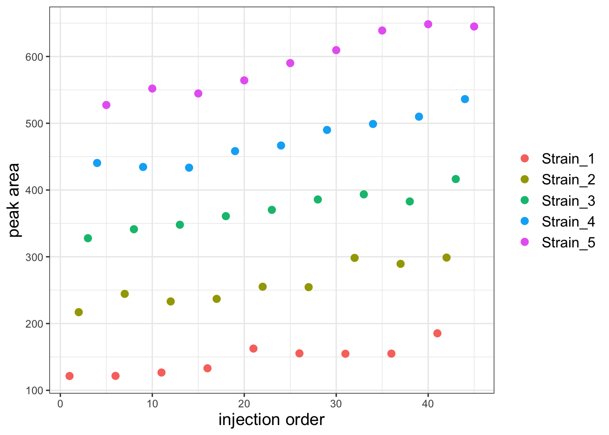
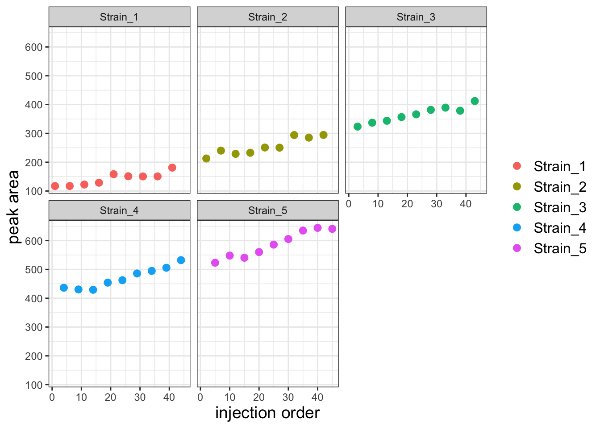
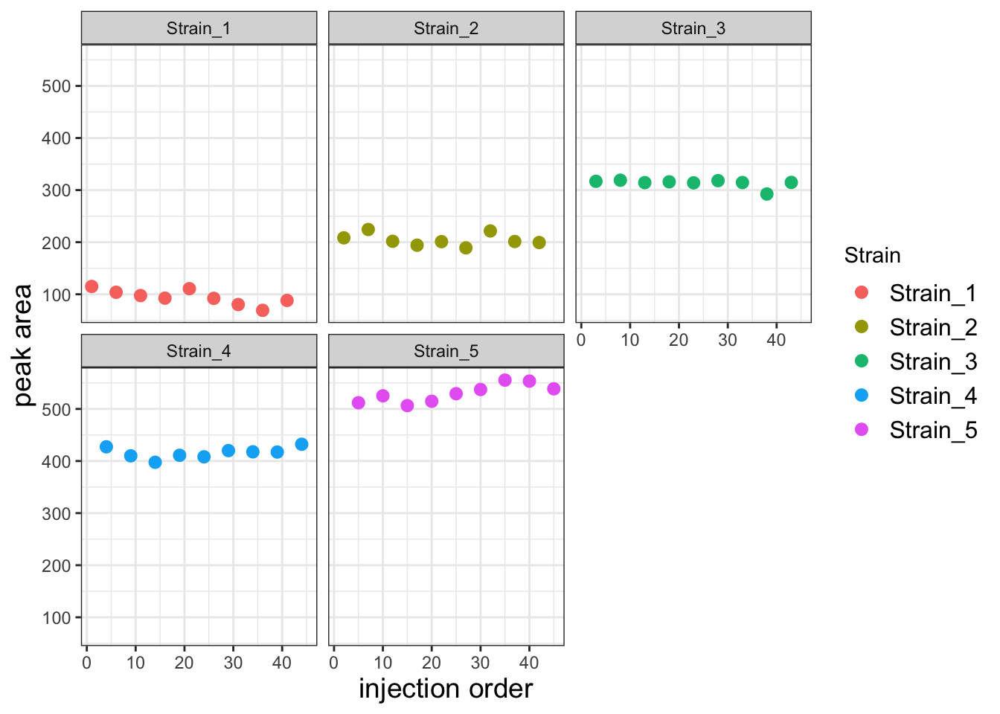
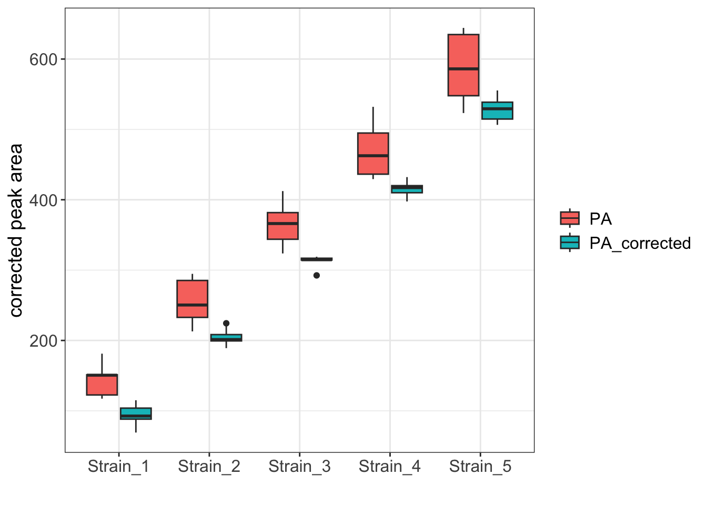
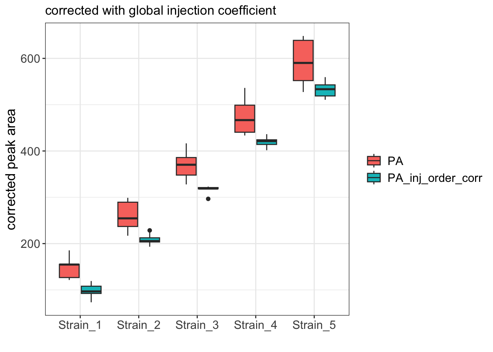

library(tidyverse)
library(kableExtra)
library(cowplot)Remove LC-MS Batch Effects Using Linear Models
Introduction
In analytical chemistry data there are often batch effects that confound data analysis. One source of batch effects is variation in instrument sensitivity across the course of the run. Here I analyze a dataset that is plagued by this type of batch effect, and I use a linear model to correct, or “subtract out” this effect. The result of this correction is data with improved accuracy and substantially lower variance among sample replicates.
Procedure in R
Import necessary libraries
Import the data and view the structure
df <- read_csv("./yeast_3DG_dataset.csv")
df <- df %>% mutate(PA = `3-DG` + Inject_order*1.05 + (runif(1) * 20))
kbl(head(df)) %>% kable_styling(full_width=FALSE)| Inject_order | Strain | Replicate | 3-DG | PA |
|---|---|---|---|---|
| 1 | Strain_1 | 1 | 104.96714 | 117.2954 |
| 2 | Strain_2 | 1 | 199.52016 | 212.8984 |
| 3 | Strain_3 | 1 | 309.26304 | 323.6913 |
| 4 | Strain_4 | 1 | 420.89253 | 436.3708 |
| 5 | Strain_5 | 1 | 506.70680 | 523.2350 |
| 6 | Strain_1 | 2 | 99.87814 | 117.4564 |
Plot the entire dataset by injection order
ggplot(df, aes(x=Inject_order, y=PA)) +
geom_point(aes(color=Strain), size=2.5) +
theme_bw() +
labs(x="injection order", y="peak area", color=NULL) +
theme(axis.title = element_text(size=14),
legend.text = element_text(size = 12)) 
It looks like there is a substantial batch effect but I think it will be more obvious if I facet the plot by strain.
Plot again but facet wrap on Strain
ggplot(df, aes(x=Inject_order, y=PA)) +
geom_point(aes(color=Strain), size=2.5) +
facet_wrap("Strain") +
theme_bw() +
labs(x='injection order', y='peak area', color=NULL) +
theme(axis.title = element_text(size=14),
legend.text = element_text(size = 12))
There is a clear batch effect, with PAs increasing with injection order. Let’s first investigate whether we can capture this effect with a linear model. Let’s first create a model that predicts PA as a function of strain alone.
Create the model using Strain as the only predictor
strain_only_model <- lm(PA ~ 0 + Strain, data = df)
summary(strain_only_model)
Call:
lm(formula = PA ~ 0 + Strain, data = df)
Residuals:
Min 1Q Median 3Q Max
-63.76 -24.75 -3.51 23.88 61.91
Coefficients:
Estimate Std. Error t value Pr(>|t|)
StrainStrain_1 142.05 11.21 12.67 1.39e-15 ***
StrainStrain_2 254.51 11.21 22.70 < 2e-16 ***
StrainStrain_3 365.53 11.21 32.60 < 2e-16 ***
StrainStrain_4 470.15 11.21 41.93 < 2e-16 ***
StrainStrain_5 587.00 11.21 52.35 < 2e-16 ***
---
Signif. codes: 0 '***' 0.001 '**' 0.01 '*' 0.05 '.' 0.1 ' ' 1
Residual standard error: 33.64 on 40 degrees of freedom
Multiple R-squared: 0.9936, Adjusted R-squared: 0.9928
F-statistic: 1248 on 5 and 40 DF, p-value: < 2.2e-16Next, let’s see if a model that adds injection order fits the data better.
Make a model that predicts using strain and injection order
comb_model <- lm(PA ~ 0 + Strain + Inject_order, data = df)
summary(comb_model)
Call:
lm(formula = PA ~ 0 + Strain + Inject_order, data = df)
Residuals:
Min 1Q Median 3Q Max
-25.259 -5.692 1.008 5.655 25.105
Coefficients:
Estimate Std. Error t value Pr(>|t|)
StrainStrain_1 94.3885 5.3720 17.57 <2e-16 ***
StrainStrain_2 204.5741 5.4619 37.45 <2e-16 ***
StrainStrain_3 313.3298 5.5544 56.41 <2e-16 ***
StrainStrain_4 415.6741 5.6494 73.58 <2e-16 ***
StrainStrain_5 530.2559 5.7468 92.27 <2e-16 ***
Inject_order 2.2696 0.1505 15.08 <2e-16 ***
---
Signif. codes: 0 '***' 0.001 '**' 0.01 '*' 0.05 '.' 0.1 ' ' 1
Residual standard error: 13.03 on 39 degrees of freedom
Multiple R-squared: 0.9991, Adjusted R-squared: 0.9989
F-statistic: 6963 on 6 and 39 DF, p-value: < 2.2e-16The residuals are much smaller in the combined model and the adjusted R2 us higher. This tells us that the model with both strain and injection order as predictors fits the data better. Giving that the effect of injection order confounds our analysis of strain effect we will subtract the injecdtion order coefficient from the strain coefficients.
Extract the coefficient for the injection order and use this to calculate a corrected PA
# extract the injection order coefficient
injection_order_coef <- coef(comb_model)["Inject_order"]
# correct the PAs by subtracting (injection order coeffiient * injection order)
df$PA_corrected <- df$PA - (injection_order_coef * df$Inject_order)Now plot the corrected data
ggplot(df, aes(x=Inject_order, y=PA_corrected)) +
geom_point(aes(color=Strain), size=2.5) +
facet_wrap("Strain") +
theme_bw() +
labs(x='injection order', y='peak area') +
theme(axis.title = element_text(size=14),
legend.text = element_text(size = 12))
This corrected data looks much better. To get a sense for how much better the variability among replicates is, let’s compare the replicates for each strain using a boxplot.
Pivot the data into tidy format and creat the boxplot
df_long <- df %>%
pivot_longer(cols = c(PA, PA_corrected),
names_to = "measurement_type",
values_to = "value")
ggplot(df_long, aes(x=Strain, y=value)) +
geom_boxplot(aes(fill=measurement_type)) +
labs(x="", y="corrected peak area", fill=NULL) +
theme_bw() +
theme(axis.title = element_text(size=14),
axis.text = element_text(size=12),
legend.text = element_text(size = 12)) 
As expected, the boxplot shows that the variance among replicates is much better after the correction.
Further improvements
When building linear models, it is critical to examine diagnostic plots that report how well your model fits the data. These plots can reveal issues with the model that are more challenging to identify by assessing model summary statistics. The most basic, and often the most informative of these plots is the fitted vs. residuals plot.
Let’s start by plotted fitted values vs. residuals for both the strain only model and the combined model.
Make Fitted vs Residuals plots
# Get the residuals for this model and plot
df$strain_only_resid <- residuals(strain_only_model)
df$comb_resid <- residuals(comb_model)
p1 <- ggplot(df, aes(x=PA, y=strain_only_resid)) +
geom_point(size=2) +
ylim(-70,70) +
theme_bw() +
labs(title='strain_only_model', y='residual')
p2 <- ggplot(df, aes(x=PA, y=comb_resid)) +
geom_point(size=2) +
ylim(-70,70) +
theme_bw() +
labs(title='comb_model', y='residual')
# Combine plots
plot_grid(p1, p2, ncol = 2)
Both plots reveal an issue with our models. The funnel-like shape of left plot shows heteroscedasticty where variance scales with the peak area. In the right plot, the overall variance is substantially reduced by included injection order as a predictor, but it is still heteroscedastic: Samples with intermediate peak areas have low variance relative to those with small or large peak areas. This suggests to me that the injection order coefficient that we subtracted away did represent the mean injection order effect, but that this mean was not a good estimate for the effect of injection order on samples with relatively small or large PAs.
This suggests it may be better to determine an injection order coefficient for each train individually and subtract this coefficient from the peak areas for that strain.
interaction_model <- lm(PA ~ 0 + Strain + Strain:Inject_order, data = df)
summary(interaction_model)
Call:
lm(formula = PA ~ 0 + Strain + Strain:Inject_order, data = df)
Residuals:
Min 1Q Median 3Q Max
-16.5623 -5.1820 -0.9357 4.2041 19.3509
Coefficients:
Estimate Std. Error t value Pr(>|t|)
StrainStrain_1 111.6433 6.4949 17.189 < 2e-16 ***
StrainStrain_2 209.7669 6.7208 31.212 < 2e-16 ***
StrainStrain_3 319.8820 6.9493 46.031 < 2e-16 ***
StrainStrain_4 408.4312 7.1802 56.883 < 2e-16 ***
StrainStrain_5 504.2363 7.4133 68.018 < 2e-16 ***
StrainStrain_1:Inject_order 1.4480 0.2635 5.496 3.57e-06 ***
StrainStrain_2:Inject_order 2.0336 0.2635 7.718 4.63e-09 ***
StrainStrain_3:Inject_order 1.9848 0.2635 7.533 7.95e-09 ***
StrainStrain_4:Inject_order 2.5714 0.2635 9.760 1.60e-11 ***
StrainStrain_5:Inject_order 3.3104 0.2635 12.564 1.57e-14 ***
---
Signif. codes: 0 '***' 0.001 '**' 0.01 '*' 0.05 '.' 0.1 ' ' 1
Residual standard error: 10.2 on 35 degrees of freedom
Multiple R-squared: 0.9995, Adjusted R-squared: 0.9993
F-statistic: 6818 on 10 and 35 DF, p-value: < 2.2e-16